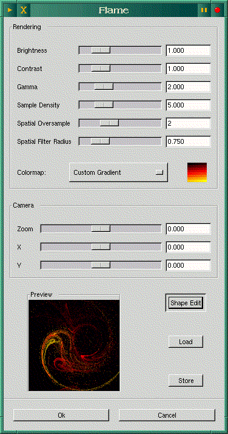

![[ TABLE OF CONTENTS ]](../gx/indexnew.gif)
![[ FRONT PAGE ]](../gx/homenew.gif)


Here in north-east Missouri we are currently afflicted with a heavy, wet snowfall, so the time is ripe to write a page updating some of my past Gazette articles, along with some e-mail which has come my way.
I've received quite a few messages concerning my article in LG
#22, Word-Processing vs. Text-Processing. Eric
Marsden sent this message concerning the Lout
text-formatting system:
From: Marsden Eric <emarsden@mail.dotcom.fr>
To: layers@marktwain.net
Subject: [LG] Lout-mode for Emacs
Hello Mr Ayers,
In the October Linux Gazette you wrote an article comparing different document formatters, and mentioned Lout in passing. I noticed that you regretted the lack of an Emacs mode for Lout code.
I agreed with you, and set out to write one. Indeed, there are now two Emacs modes, since another Lout user had also set about writing one, independently of my effort. Both are available on my site, where you'll also find the Lout FAQ/HOWTO.
You were right to mention that "The Lout system is still maintained and developed"; Jeff Kingston is quite receptive to suggestions and requests for new features in the formatter, which is far from being the case for TeX (now frozen) and LaTeX (whose development group seems very closed).
I agree that Lout is very much less widely used than LaTeX, which is a definite disadvantage. I believe that things will change over time, in particular given Lout's very strong capabilities for mixing graphics and text. I might even write an article for the Linux Gazette myself to spread the word. Eric Marsden
emarsden @ mail.dotcom.fr
It's elephants all the way down. [LA: sounds like a Terry
Pratchett quote!]
I tried out the XEMacs mode found at the above link, and though it's still under development, it works well here and is well worth investigating.
Here's another interesting message:
From: oliver@fritz.co.traverse.com (Christopher Oliver)
Subject: TeX/GROFF
To: layers@marktwain.net
I noticed in your defense of mark-up systems, you didn't touch on issues regarding quality of output. If you write on this in the future, you might find What has WYSIWYG done to us? by typographer Conrad Taylor quite interesting. I think he makes quite a case that the word processors aren't suitable if the user cares about the quality of the typesetting. I think there is a lot of good thinking there for folk involved with document production at any level. This link will take you to the article.
Regards,
Christopher Oliver Traverse Communications
Systems Coordinator 223 Grandview Pkwy, Suite 108
oliver@traverse.com Traverse City, Michigan, 49684
Another message concerning Emacs and LaTeX:
To: layers@marktwain.net
Subject: Word Processing and Text Processing
From: Peter S Galbraith <galbraith@mixing.qc.dfo.ca>
Nice summary!
> Emacs provides excellent syntax highlighting for LaTeX files,
> which greatly improves their readability.
I also wrote a better syntax highlighting Emacs package for LaTeX files, called font-latex.el. I think I should make it part of Emacs. I doubt you knew about it even though it's distributed as a contributed package with AUC-TeX.
> Xtem has one feature which is useful for LaTeX beginners:
> on-line syntax help-files for the various LaTeX commands.
There are a few add-on packages to AUC-TeX that do this by interfacing with latex info files:
- http://www.ifi.uio.no/~jensthi/word-help.el
- ftp://ftp.phys.ocean.dal.ca/users/rhogee/elisp/func-doc.el
Peter Galbraith, research scientist
Maurice-Lamontagne Institute,
Department of Fisheries and Oceans Canada
I confess I'd seen Mr. Galbraith's font-latex.el in the AucTeX distribution files, but didn't realize that it is an extra package which must be explicitly loaded. The version included with AucTeX is an older one; I recommend downloading the latest revision from this FTP site. Along with font-latex.el, a file called font-latex.tex is available at the site. This file is a sort of demo for font-latex.el, illustrating its capabilities. Some people won't like the very colorful approach to highlighting this LISP file provides, but with judicious selection of colors (now so much easier using the Customize facility!) the readability of TeX files is much enhanced.
I recently happened across a message posted to the
comp.editors newsgroup which eloquently expresses a plea
which I'm sure will resonate with many Linux users:
From: Des Small <dms@nutri-matic.mechanoid.soton.ac.uk> Newsgroups: comp.editors
Subject: Re: writing an editor
Date: 17 Dec 1997 22:09:22 +0000
Organization: Southampton University
X-Newsreader: Gnus v5.5/Emacs 20.2
(discussion of editor internals snipped)
Given that the Unix world has already more editors than could possibly be required, and a dearth of even modest word-processing type apps, I would urge you at least to consider allowing multiple fonts in one document. You don't have to rewrite Word; we don't even have a competitor for Notepad (simple wysiwyg-ish thing with RTF output). And no, XEmacs does not count.
(more discussion snipped)
<rant>
But I really, really think that this particular wheel has been reinvented often enough. What I want is a toy word processor/editor, like wordpad on steroids, say, which could be used for writing simple letters to Auntie (for the Windoze crowd), and to make programming more pleasant (different faces for different bits of syntax), and a nice HTML mode. XML (a sort of SGML-lite) is coming, and its facilities for structured documents could make it a snap to develop literate programming envronments, without locking you in to one set of tools, or using (eek!) embedded TeX. You could have DTD's for almost every application, and finally supercede the (admittedly powerful) Unix "everything is a stream of bytes" philosophy with a universally understood set of conventions for structured documents. Word processors could use XML for storage! You could share files across platforms! You could even still use Emacs or vi or joe, if you wanted to!I know XEmacs can (probably) do all this, but I want a small, fast, cute version, that doesn't eat all my RAM. I want to use proportional fonts to edit text (which Sam and Wily allow) without changing my entire world-view (which they tend to insist on), and I don't care if it won't run on a vt100. It's 1997 for heaven's sake! I have a windowing system! (Admittedly, it's only X, but it's still a window system!) At the moment, my desktop has a bunch of terminal emulators, and a couple of GNU emacs frames open. These are powerful tools, but they hardly constitute a rich GUI environment that would make me the envy of all my friends (they lust after the stability of my system, but they run away screaming when confronted with the tools. And they are neither stupid nor technophobic).
I don't want a ultra-heavy power tool, and I don't care about slow serial lines: I already have tools for those jobs. I just want a sprinkling of nice fonts, and an interface which doesn't scare off Windows or Mac users. Context sensitive pop-up menus might be nice, and a reasonable (in terms of looks and functionality) menu bar, too. Real-time spell-checking along the lines of Word is quite a nice idea, too -- spellchecking email and Usenet posts is overkill if it takes any effort at all. (Even M-x ispell-buffer is effort: I have to remember to bother.) Notepad on steroids, is all I want, really. And it has to be free (as in freedom-not-price, that is).
Does anyone have one, or do I really have to roll my own? And does anyone have any info on (or pointers to) suitable data structures for such a thing?
Standard Unix tools are very powerful, and for some things I find them indispensible. But, for me at least, vt100 compatibility is a legacy issue. Sometimes I use remote systems, and then I telnet in and use vi, and I'm happy to do so. But most of the time I'm on my own Linux box, with 16Mb and clock cycles to burn. I can afford some luxuries, but I don't want a whole XEmacs. Is this really so weird, this late in computing history? Or did I swear a vow of allegience to xterms and non-proportional fonts when I signed on as a Unix user? Am I the only person who finds the current situation imperfect? Do I have to wait for GnuStep to combine the robustness and programmability of Unix (which I love) with a halfway-sane GUI-fied environment for those "I want to use a tool but I haven't got a month spare to master the interface" moments?
</rant>Sorry to rant on like that, but I feel strongly that the many things Unix does well should not (and in the eyes of the Heathen do not) excuse its barely-half-hearted embracing of the possibilities of the new-fangled (ahem...) bit-mapped screen.
Des,
who sometimes feels trapped in a 1980's timewarp.
After reading the above posting, I began to think about editors which can display proportional fonts. Off-hand I can think of three which offer this option: XEmacs, the semi-commercial Edith editor, and NEdit. All three display Postscript fonts well only if bitmapped versions are available, which limits you to the fonts (such as Times Roman and New Century Schoolbook) supplied with X. XEmacs will attempt to scale other Type 1 fonts but they are unaliased and unsightly. Edith and NEdit don't even try to scale the fonts, and only the 12 point size is offered in the font dialogs. This isn't the fault of the editors I've mentioned; they just do what X will allow them to do. There are several Type 1 font rasterizers under development for Linux, and perhaps this deficiency in the X environment will eventually be addressed. This could be helpful in attracting Windows users to Linux, as Win95 and NT, for all their faults and annoyances, do display scalable fonts well.
If anyone knows of a technique for generating bitmapped fonts in various sizes from standard type-1 Postscript fonts, I'd love to hear about it!
Both the Gimp and SDCorp's WordPerfect 7 port will scale Postscript fonts flawlessly; I assume they have their own internal font-display engines. I imagine that StarOffice and Applix can do the same.
A floridly-worded letter from Harry Baecker was printed in issue 23 of LG, to which I felt compelled to respond: he seems to think my opinions on text-processing are "a ritual obeisance to received wisdom" and a "requisite Unixworld denigration of word-processors and their users". On the contrary, I have little interaction with Unix users and my expressed opinions are a direct result of my experiences using both word-processors and text-formatting systems. So there!
The folks at SDCorp in Utah have made a welcome change to the licensing scheme used in their Linux port of WordPerfect 7. When the port was first released a licensing daemon had to be running in order to run the word-processor, which would only work on the original machine on which WP was installed. Now the daemon isn't necessary, and the application isn't limited to one machine. Rumor has it that WordPerfect 8 will be ported to Linux sometime next year if sufficient interest is shown in the Linux community.
There have been new releases of several editors lately. Those of you who are of the VI persuasion will be glad to hear of new versions of all three of the actively-maintained VI-clones.
Vim is probably the most featureful of the VI-style editors. Judging by newsgroup postings, it may be the most popular as well. With the release of vim-5.0s, vim 5 has finally reached a beta rather than alpha state. This revision has a really well-implemented syntax-highlighting system for many programming and shell-script languages, and it's not too difficult to adapt to new file-types and languages. The down-side is that vim is growing larger, and is beginning to lose the quickness and low memory-usage that has been a hallmark of VI-style editors. Of course, memory is cheap and machines are more powerful these days, so this isn't as much of a factor as it used to be.
I tend to use XEmacs as my primary editor, due to its excellent programming modes, with vile/xvile as an adjunct for quick editing tasks, such as config files and e-mail messages. Vile 7.3 was released recently, and it is in my opinion the ideal vi-style editor for an Emacs user. It incorporates several of the most common Emacs keystrokes, such as control-x-1 and control-x-0, which softens the transition between the two.
Recently Paul Fox, who several years ago modified the
Microemacs code until it became the first version of the vile
vi-like editor (sounds improbable, but it's true!), posted an
interesting response in the comp.editors newsgroup. He
was responding to a query concerning the differences between vile
and vim:
From: pgf@foxharp.boston.ma.us (Paul G. Fox)
Newsgroups: comp.editors
Subject: Re: Vile 7.3 Announcement
Date: 29 Dec 1997 00:21:07 GMT
brian moore (bem@news.cmc.net) wrote:
: > How about portability? I use Vim under NT at work, Linux at home.
: : vile runs on both, and OS/2 and a bunch of other stuff. Hell, it even
: works on Solaris! :)
:and VMS and Win95. i'm not sure which i've used less. :-)
as the original vile author, i'll chime in here, but a) i'm biased :-), and b) i've never used vim much, except when looking at a specific feature implementation.
vile's design goal has always been a little different than that of the other clones (and i mean elvis, vim, and nvi here -- i don't know enough about any of the others). vile has never really attempted to be a "clone" at all, though most people find it close enough. i started it because in 1990 i wanted to to be able to edit multiple files in multiple windows, i had been using vi for 10 years already, and the sources to Micro-EMACS came floating past my newsreader at a job where i had too much time on my hands.
i started by changing the uemacs keymaps in the obvious way, and ran full-tilt into the "hey! where's 'insert' mode gonna come from?!" problem. so i hacked a little more, and hacked a little more, and eventually released in '91 or '92. (starting soon thereafter, major version numbers tracked the year of release: 7.3 was the third release in '97. i don't know what tom is going to do about the Y2K problem. ;-)
but my goal has always been to preserve finger-feel, as opposed to display visuals , and, selfishly, to preserve finger-feel most for the commands i use. :-) i've never used ex mode much, so vile doesn't have much of an ex mode. actually, it has quite an amazing ex mode, that works very well -- it just looks really odd, and a couple of commands ("t", and "m", which are beyond the scope of the current parser) are missing. for the same reasons, it also won't fully parse existing .exrc files, since i don't really think that's very important -- it does simple ones, but more sophisticated one's need some tweaking. when you toss vile's built-in command/macro language, you quickly forget you ever cared about .exrc.
just for bragging rights, i think vile had X11 support earlier than the others, thanks to work by Dave Lemke from NCD, and Keving Buettner who made it really functional. i take no credit -- i never use xvile. on the other hand, vile wasn't real useful under DOS, since it doesn't use a swap file, and the memory limits got in the way pretty quickly. (of course, this isn't a practical problem under real OSes.)
unfortunately, since none of the "vi rewrite" authors were collaborating much in the early years (if we knew about one another at all :-), i think we all made different choices for the extension commands. vile tends to follow an emacs-like model, and uses ^X and ^A as built-in (but rebindable, of course) command prefixes, and indeed uses emacs bindings directly for some commands: like ^X-2 to split a window in half.
another typical difference: i insist that ":q" should quit the editor, and not just close the current window. both nvi and vim got this wrong, imho.
another one: vile does infinite undo the way nvi does, and not the way vim does. small differences, but ones that can make a user prefer one over another.
as someone else said in this thread -- if you're choosing a new version of vi, you owe it to yourself to try them all, for half an hour of real work with each, and make your choice based on that. vim has lots and lots of support, and having this nice "comp.editors.vim" newsgroup helps :-), but the others have things to offer too, and you might like one of the others better. i do. ;-)
btw, i'm only peripherally involved in vile maintenance anymore -- Tom Dickey does most of it (thanks tom) these days -- i just run the mailing lists.
current versions can be had from: ftp://ftp.clark.net/pub/dickey/vile
paul
paul fox, pgf@foxharp.boston.ma.us
(arlington, ma, where it's 23.5 degrees)
Steve Kirkendall's Elvis editor has also been updated recently. The X version, like vim's, has good syntax-highlighting support, and also like vim, the windows (95/nt) version is well-supported, for those users who need to work in that environment. I confess I haven't spent as much time with elvis as I have with vile and vim; perhaps another user might care to contribute?
XEmacs development continues apace. Versions 19.16 and 20.3 are available (from the home site and its mirrors) but one of the most interesting developments is taking place in the 20.5 series of betas.
A common complaint about XEmacs is its bulk and lengthy
loading time. A full distribution is huge, with many bundled
packages for which most users have little use. Trying out a new
version was not to be undertaken lightly, as the download time
was long and a large block of disk space needed to be available
for compilation. The XEmacs team is in the process of unbundling
packages, which are now available individually. The base source
archive is now around eight megabytes, while the compiled LISP
(*.elc) archive is only one and one-third megabytes. The
packages are independent, and when this beta of XEmacs is
compiled it finds whichever packages you have installed and loads
their documentation, menu-items, and keybindings. The package
subdirectory is independent of the version-specific binary and
LISP directories, so unchanged package files need not be
downloaded when upgrading to a new XEmacs version. The easiest
way to try this out is to compile the base source archive without
any packages installed and see what doesn't work. Then packages
can be incrementally installed until the desired functions are
once again available. After a new package has been unpacked, the
/lib-src/DOC file should be deleted. Run make again and
the new package should be found and incorporated into the editor.
In other words, it's a good idea to keep the built source-tree on
your disk until you've generated an XEmacs which meets your
particular needs. Of the subset of the available packages which
I installed, only the Ediff package initially failed to work, but
after some experimentation I found that the line
(require 'ediff-hook)
in the XEmacs init file caused it to be loaded.
The release version of 20.5 should be available in the late spring of 1998.
A new version of NEdit has been released recently. NEdit has become popular with programmers and general users due to its nicely-designed interface, equally-useful mouse and keyboard control, and relatively small size. Version 5.0 adds very configurable (via dialog-boxes) syntax-highlighting and a new macro language. It's one of the easiest editors to learn, and it's nearly as powerful as Emacs without being as large and memory-hungry. If you like mouse-based editing, the ability to highlight a selection and drag it to another location in the file will be appealing. This function isn't found, as far as I know, in any other editor available for Linux.
NEdit is strictly X-based; if you like to edit in a console session (admittedly a minority view these days) this editor may not be to your taste.
There are now two versions available: the main version is maintained by Mark Edel at Fermi National Laboratories, and both source and binaries are available from ftp.fnal.gov, the home site. Max Vohlken has made a number of patches to NEdit 5 which for various reasons haven't been accepted into the main distribution. He has been packaging his patched version into an alternate release, and it can be also obtained from the above site, in the /KITS/pub/nedit/v5_0/contrib/max/5.0 directory. Both versions have adherents, it seems.
Christian Bolik recently released the first new version of the desktop- and file-manager TkDesk in nearly a year. Version 1.0b5 has some nice new features (check out the Be-style icon-bar!), and is well worth looking into. This beta is supposed to be the last; as soon as [incr tcl] (an object-oriented extension of Tcl) is updated to work with Tcl8.0, TkDesk will also be able to make use of the latest Tcl/Tk releases. The TkDesk web-page has recently become inaccessible, but the new version is still in Sunsite's /pub/Linux/Incoming directory.
Henrik Harmsen's FileRunner is now (with version 2.4.1) a GNU General Public License application, which means that it will be more easily included in distributions such as RedHat and Debian. FileRunner is small, quick, and efficient, and if you have installed Tcl/Tk 8.0 you should give it a try. It can be obtained from this site.
The Midnight Commander, the versatile text-mode file-and-archive-manager, is still under continual development. Beta 4.1.19 is the latest beta, and although none of the X-windows versions are yet ready for prime-time, these recent betas are well worth installing, as useful new features are continually added. Source (which generally will compile without a hitch) is available from this site.
I must confess that the numerous icon-based file-managers, many of which have been released or updated lately, don't really suit my needs. Several are based on the venerable xfm manager, or its (apparently abandoned) successor moxfm. Surely one of you readers out there prefers this type of file-manager? Why not write an article or review for the Gazette? There's room here for all sorts of views, after all!
Jamie Zawinski is a programmer and hacker currently working
for Netscape. He has written several useful free software
programs, including xkeycaps and several of the screensaver modes
included with both Xlockmore and XScreensaver. He also was
involved in the early development of Lucid Emacs (an ancestor of
XEmacs), and has contributed to the development of many Emacs
packages including the Fontlock highlighting mode. I recently
received this message from him:
Date: Sat, 29 Nov 1997 20:20:12 -0800
From: Jamie Zawinski <jwz@netscape.com>
Organization: Netscape Communications Corporation, Mozilla Division
X-Mailer: Mozilla 3.02 (X11; U; IRIX 6.2 IP22)
To: gazette@linuxgazette.net
CC: layers@marktwain.net
Subject: xlockmore and xscreensaver
Dear Linux Gazette folks,
I saw the article on Xlockmore by Larry Ayers in issue 18 of the Linux Gazette, and I was surprised that it didn't mention, even in passing, my XScreenSaver program!
Allow me to engage in a bit of advocacy.
Back in 1991, before Xlockmore existed, there was only Xlock. Xlock was not a screensaver: it was only a locker. There was no way to make it activate itself automatically when the console became idle, nor was there any way to avoid having it lock the screen: that is, there was no way to have it turn off when the mouse moved.
So, I wrote XScreenSaver.
XScreenSaver is superior to Xlockmore in a number of ways. The most important way, of course, is that it is actually a *screen saver*. Although Xlockmore can be configured to not require a password, it still doesn't have the ability to turn on when the machine is idle; for that you have to use an external program that launches and kills it.
The second way in which XScreenSaver is better is that it takes a server/client approach: the "xscreensaver" program itself knows how to detect idleness, and to lock the screen. The graphics hacks are not built in: the beauty of XScreenSaver is that any program which can draw on the root window can be launched by XScreenSaver for use as a graphics hack! This has several benefits:
XScreenSaver also includes a nice Demo Mode that lets the user interactively experiment with the currently-configured graphics hacks. (Until recently, most Linux users wouldn't have been able to take advantage of this, since the code had required Motif; but that is now configurable, and demo mode works with Athena widgets too -- since release 1.27 back in January 1997.)
If you have a system with more than one monitor, XScreenSaver can save them both at once: a different graphics hack will run on each, and if the two monitors have different depths (for example, if one is monochrome and the other color) they can be configured to choose their screenhacks from different lists, so that each monitor is running the hacks that look best on it.
Most of the xlockmore hacks (the ones that I liked, anyway, including the GL modes) are included with the XScreenSaver distribution; the only change made being to extract the various display modes from the monolithic XLock executable, and turn them into standalone root-window-oriented programs.
However, it's possible to have XScreenSaver run xlock itself, as just another one of its many modes -- the best of both worlds!
Do check it out: the canonical web page is <http://people.netscape.com/jwz/xscreensaver/>, which includes screen shots and descriptions of most of the included graphics hacks.
The latest version, as of this writing, is 2.12. At last count, it came with 64 different graphics hacks. Roughly a third of these were written by me; the others were graciously contributed by others.
And, of course, it's all free, under the usual X-Consortium-style copyright.
You also might enjoy my philosophical rambli ngs on the nature of screensavers, at <http://people.netscape.com/jwz/gruntle/savers.html>.
Jamie Zawinski http://people.netscape.com/jwz/ about:jwz
Since I last wrote about the Gnu Image Manipulation Program (in LG #18) both the GTK toolkit (the underlying programming framework of the Gimp) and the Gimp itself have undergone several revisions. The long-awaited version 1.0 still hasn't been released, but may have been by the time you read this. There has been talk of a release by Christmas.
There's really no reason to wait for a non-beta release, though, as the version available as of mid-December is very useful and impressive. Some incredible new plug-ins are bundled with version 19.16, and general stability has been much improved. A useful feature for new users has been added: at start-up a small window appears which contains a different usage tip at each invocation. This can be disabled at any time. One caveat: be sure to obtain the corresponding version of GTK (in this case gtk+-0.99.0), as unlike some earlier versions it is no longer bundled with the Gimp.
Here are brief descriptions of some of the new plug-ins:
I admit I've never used Adobe's Photoshop and the many commercial plug-ins available for it. Therefore my initial reaction (composed of equal parts of awe and wonder) to this plug-in may seem a bit naive, as there are several commercial extenders for Photoshop with similar capabilities. Be that as it may, clicking the mouse pointer on an image thumbnail and actually stirring and shifting pixels interactively is quite amazing.
A screenshot will give you an idea of the nature of the
interface and the options available:
The plug-in offers a choice of six different methods of changing an area of pixels in an image: clock-wise rotation, counter-clockwise rotation, growing, moving, shrinking, or removing. Playing around with this plug-in will give you a good idea of its capabilities. Try setting it to one of the rotation options, then hold the first mouse button down as you slowly move it across an image. It's as if a miniature hurricane is travelling across the image, leaving spirals of distortion in its wake. I imagine that a drawing tablet would be handy to use with this plug-in, allowing more precise control than that provided by a mouse.
Like icing on a cake, Iwarp has animation capabilities built-in. Once you have warped an image to your satisfaction, select the animation tab in the plug-in's window; this lets you choose how many frames to create, and whether to make them cycle repeatedly (the ping-pong effect) or just play from start to finish. Each frame is saved in a separate layer, and there is a convenient plug-in called Animation Playback which will let you view it.
So what's the use of this? You can use it to create animated GIF files for web-pages, or perhaps tweak a small area of an image, but mostly it is just a lot of fun!
Gimp 0.99.16 must be something of a milestone for Scott Draves, creator of the Flame and Fuse plug-ins (as well as the Bomb interactive screen hack). Though successive versions of the Flame plug-in have been available for some months now, the maintainers of the Gimp have been reluctant to include it in the Gimp distribution due to certain licensing restrictions which Scott had placed on the program and its output. Recently Scott relaxed those restrictions and Flame is now a part of the Gimp.
Flame is similar in some ways to the IFS-Explorer plug-in, in
that is based on Iterated Function Systems fractal algorithms,
but the approach and interface are different. Rather than
manipulating three triangles, which is the traditional IFS
interface used by IFS Explorer, Flame does much of its work
"behind the scenes", though there are still several options
available to the user. One nice feature is the built-in support
for the Gimp's color gradients. Several of Scott Draves' own
gradients are included in the plug-in, but any others can be
entered into an entry-field in the plug-in window. Here's a
screenshot of a typical window:

Flame can generate some really intriguing images; some of Scott Draves' examples can be seen on this web page. If you are using an earlier Gimp version, a binary of the plug-in has been thoughtfully included in the Flame archive file available from the page. Just drop the binary into your Gimp plug-in directory; the next time you start the Gimp Flame should be accessible from the "Render" sub-menu.
It's interesting to compare the results obtainable from Flame and the IFS-Explorer plug-ins, as they both are based on the same mathematical principles but have such different methods of implementing them.
Another plug-in from Scott Draves is called Fuse. This one is used to disassemble a pair of images and merge them into one, using what seems to be some sort of AI trial-and-error process. A preview window shows the various attempts in real-time, which can be interesting to watch. The process is time-consuming, as the plug-in seems to be repeatedly dissatisfied with its results, and will back up to a previous branch in the process and start anew. Scott Draves has achieved some interesting results with Fuse, which can be viewed on this web-page. It would take some practice to gain proficiency with this plug-in; this is one of those applications which may require reading the source code to get a feel for just what is going on behind the scenes. In other words, no on-line help!
The Illusion plug-in is another interesting one to experiment
with. It was written by Hirotsuna Mizuno, a Japanese
programmer. What this one does is difficult to describe; it
seems to duplicate an image and tile a new one with "faded-out"
copies of the original. This results in a surrealistic sort of
pattern, and could be useful in creating watermark-like
backgrounds. A before-and-after pair of screenshots should
convey an idea of its capabilities:
The Map-Object plug-in, though included with 19.15, unfortunately wasn't supplied with the 0.99.16 release. It is being developed by Tom Bech, of the University of Bergen in Norway. This plug-in will map or project an image onto the surface of either a sphere or a skewed plane, with full control of many parameters such as the light source's orientation and color. The background can easily be set to be transparent, which makes the output useful in HTML files. If you are still using version 19.15 of the Gimp the current version is functional. Perhaps by the time Gimp 1.0 is released Mr. Bech will find time to adapt this ingenious plug-in to the rapidly-changing Gimp/GTK environment.
Just as I was finishing this article Gimp 0.99.17 was released, and Map-Object has been reinstated into the distribution. A new version of GTK was released concurrently; visit ftp.gimp.org if you'd like to obtain the source. Debian and Redhat packages of these releases are also available there.
This is just a sampling of the more than sixty plug-ins bundled with the 19.16 release; more are appearing regularly, and when the 1.0 release is completed (and development of the Gimp moves on to a new beta version) the resulting "fixed target" should make developing new plug-ins easier for programmers. Last modified: Sun 4 Jan 1998